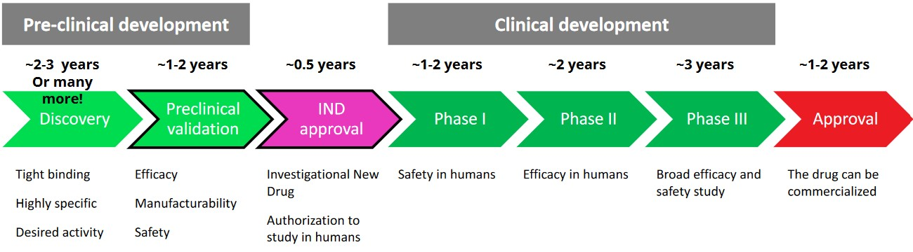
6 Regulatory Investigational New Drug Application
The above figure shows the general timeline (covered in the previous lecture) for developing a novel drug. The entire timeline takes about 12 years.
6.1 Pharmacokenetics versus Pharmacodynamics
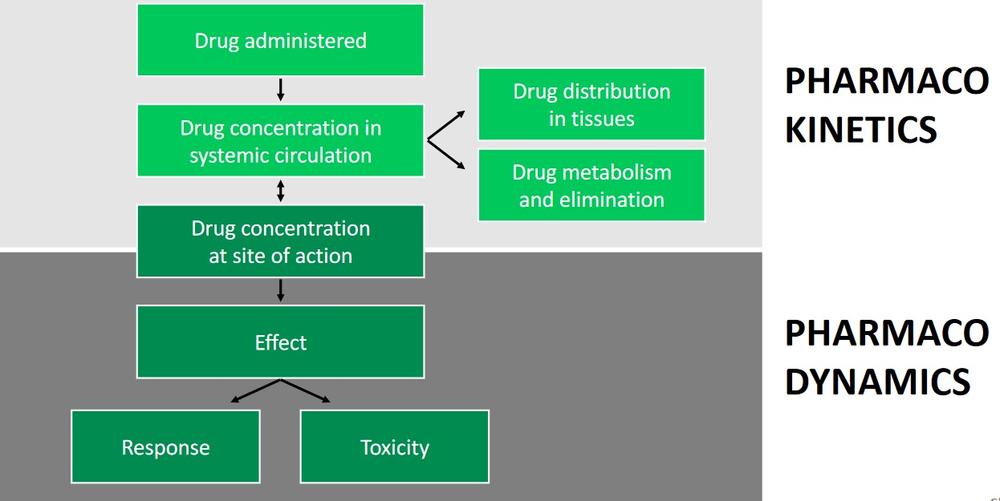
The above figure illustrates the differences between pharmacokinetics and pharmacodynamics. Pharmacokinetics deals with the administration of a drug while pharmacodynamics deals with the effects of a drug.
6.1.1 Pharmacokinetics
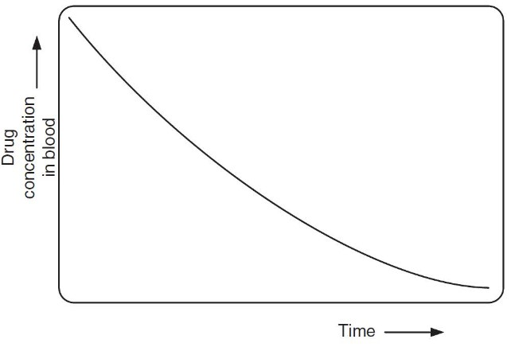
Drugs are eliminated from the human body over time. The half time (i.e., \(\displaystyle t_\frac{1}{2}\)) of a drug is the amount of time that is needed to clear 50% of it from the body.
6.1.1.1 Biodistributions
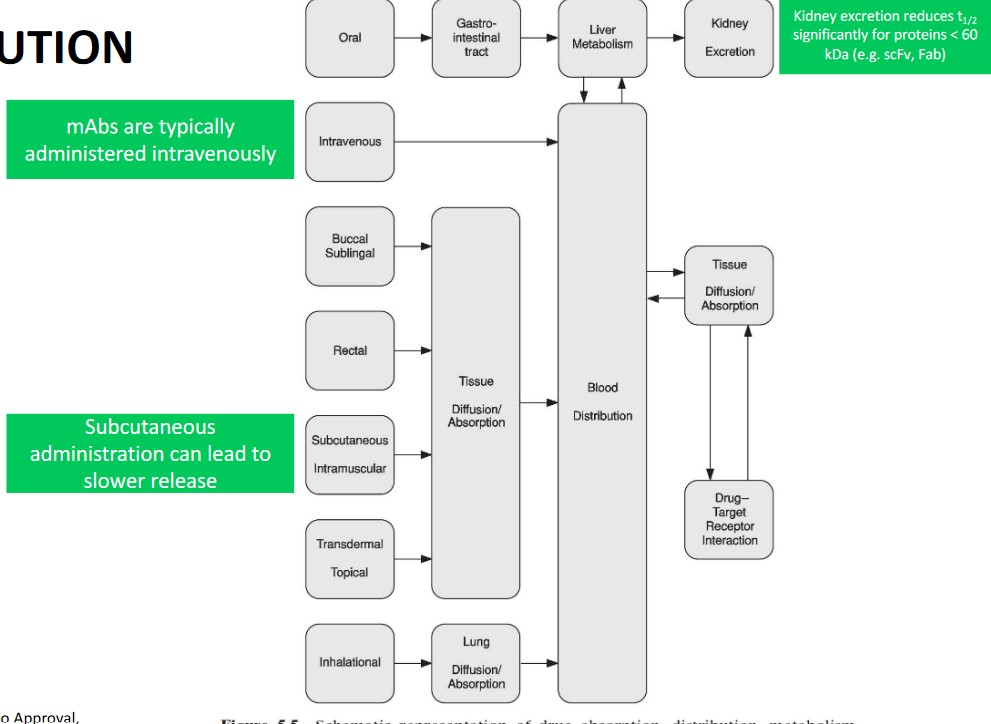
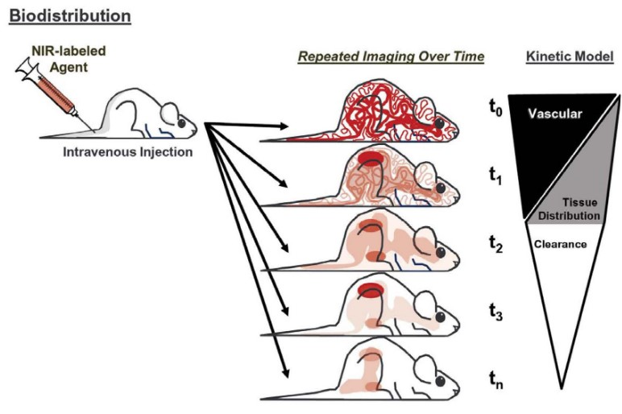
In a typical biodistribution setup, the drug is administered (either using single or multiple concentrations) and measured in different organs at different time points.
Drug concentrations can be detected using fluorescence labeling and radioisotope labeling.
6.1.2 Pharmacodynamics
The potency of a drug is its required dose to generate an effect. A drug’s effectiveness is its intensity of its effects or its response.
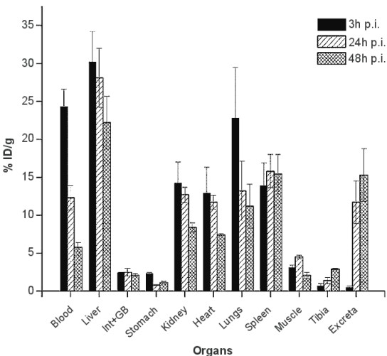
The above figure shows an example of a biodistribution assay. The vertical axis represents the percentage of injected dose per gram; the bars represent time post injection.
The above dose-response curve shows the behavior of two hypothetical drugs in vitro. Drug A is more potent while drug B is more effective.
6.2 Efficacy Studies and Toxicology
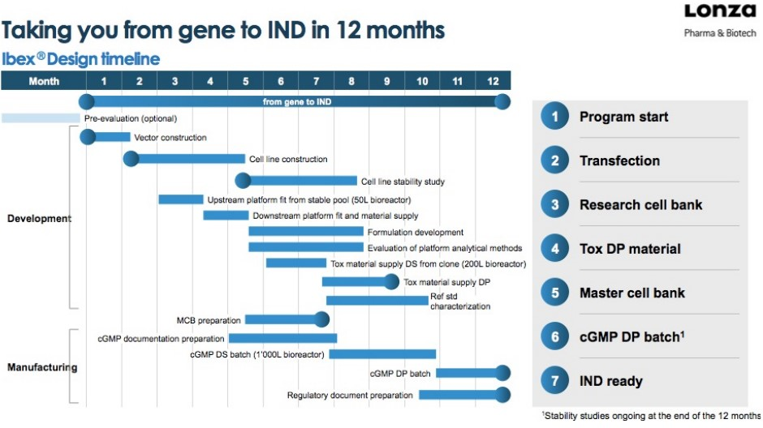
6.2.1 Efficacy Studies
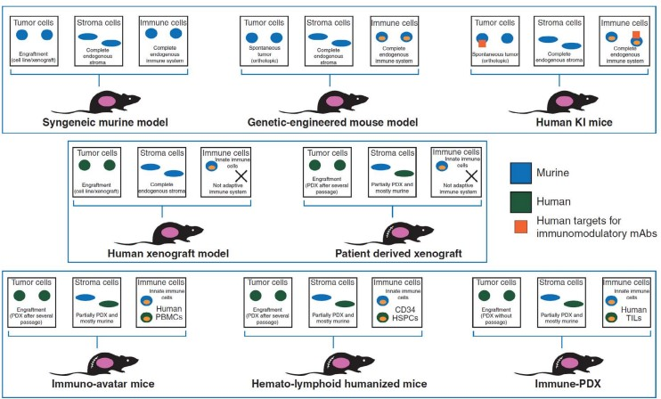
6.2.1.1 Example: Anti-PDL1 mAb MEDI4736
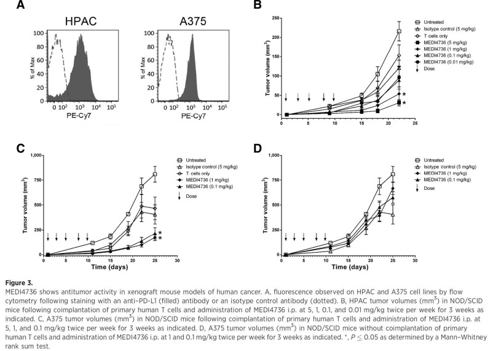
In this study, mABs were injected into mice twice per week; the tumor volume of the mice’s tumors were observed for 25 days.
6.2.2 Toxicology
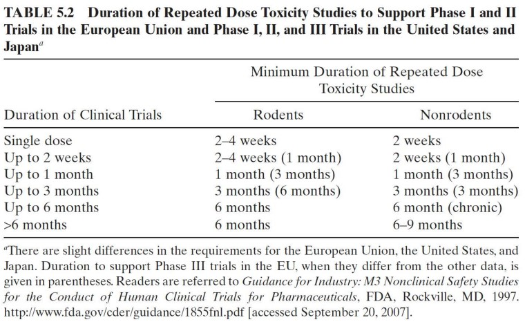
Toxicology studies typically happen in two mammalian species. Mice and rats are the choice organism for rodents while non-human primates (e.g., monkeys) are the choice organism for non-rodents.
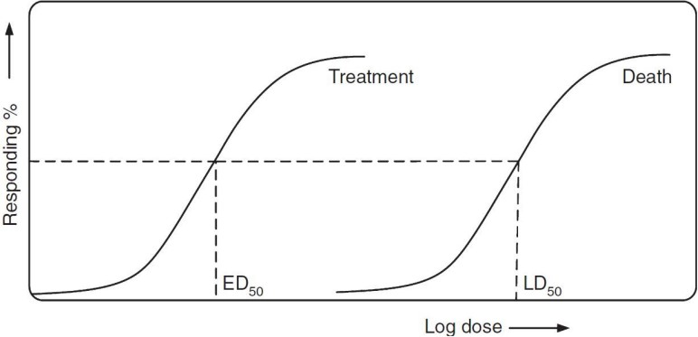
The ED50 is the Effective Dose for a drug to have some effect on 50% of an organism’s population. The LD50 is the lethal dose for 50% of the population (i.e., the amount needed to kill off 50% of the population).
The Therapeutic Index is the quotient of the LD50 and the ED50 - in other words, \(\displaystyle \frac{LD_{50}}{ED_{50}}\). The standard safety margin is: \(\displaystyle \frac{LD_1 - ED_{99}}{ED_{99}} \times 100\).
6.3 Manufacturing
6.3.1 Cell Line Development
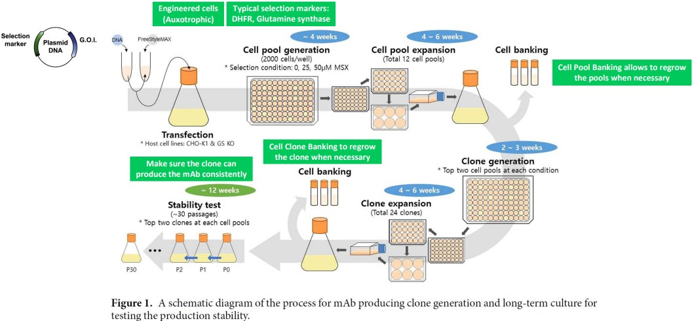
6.3.2 Process Development
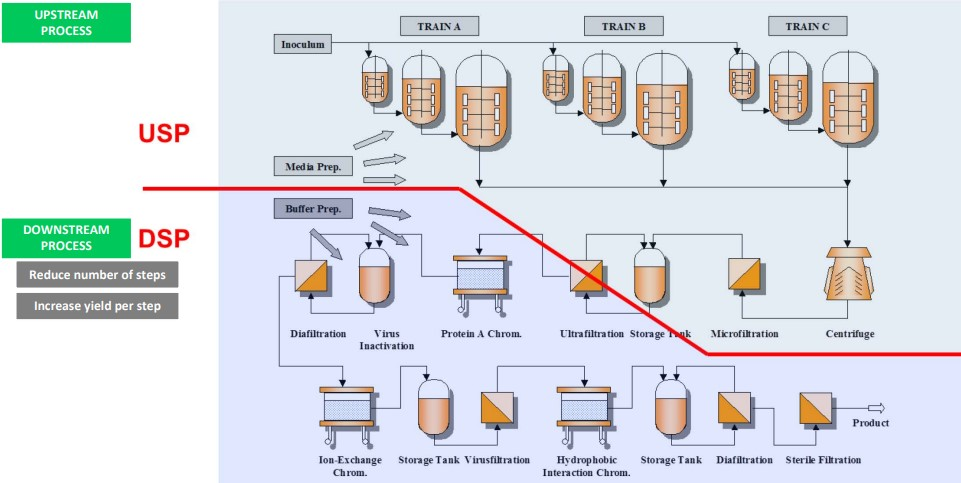
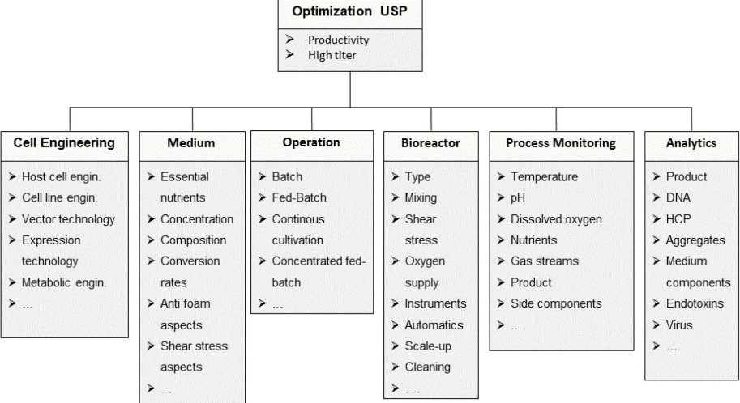
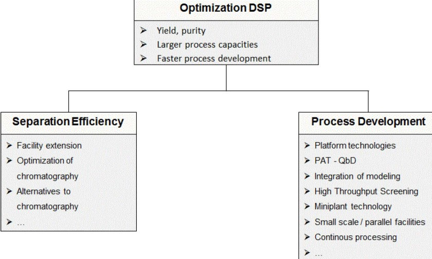
6.3.3 Stability Testing
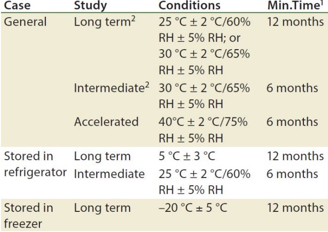
IND submissions can be started 1 - 3 months after stability testing.